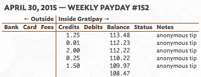
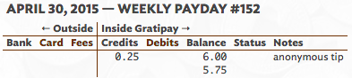

Water Police Fund Raiser
2015-08-26 Update
The Idea
 On August 26, 2014 the Dive Team arrived over
the USS Houston CA-30 in Indonesia to discover small-scale salvage operations
underway. With sirens and loud speakers our guide & translator Daniel Tangguh
scared them off. They remained away from the Houston for the 10 days we were
there. On September 3, 2014 we departed the
Houston. Presumably, salvage operations resumed shortly thereafter.
On August 26, 2014 the Dive Team arrived over
the USS Houston CA-30 in Indonesia to discover small-scale salvage operations
underway. With sirens and loud speakers our guide & translator Daniel Tangguh
scared them off. They remained away from the Houston for the 10 days we were
there. On September 3, 2014 we departed the
Houston. Presumably, salvage operations resumed shortly thereafter.
During our trip we met with the Indonesian Water Police several times. (See photo of Alex Weissinger (diver), grandson of William J. Weissinger jr. with two Water Police officers.) We encouraged them to do as much as they can to protect the Houston from salvage. They are sympathetic to our cause, but chief among their concerns was that while they have several patrol boats (flashy and undercover), they rarely have enough fuel for their boats for sufficient patrol time to perform all their duties.
We returned home, flew to Washington D.C. to meet with US Navy officials, then home again. The question remained: How can we best protect the Houston while we're not there on site? It seems to me that the Water Police are our best hope. Giving cash to the Water Police to fuel their patrol boats is not without risk. The reality of life in Indonesia is that it takes bribery to get law enforcement to do their jobs. Their salaries are meager and they have families to support. But if anyone can help, day after day, on site in Indonesia, it's the Water Police.
What if we could get 500 people to give $1/month to the Water Police? Most Americans wouldn't even notice $1/month out of their budgets, but $500/month might go a long way towards making a real dent in salvage operations on the Houston.
The Rollout
On November 20, 2014 I decided to start a micro-donation fund raiser for exactly that purpose. Give cash to the Indonesian Water Police. Every month. A website was available, called gratipay.com, which allows hundreds, or even thousands of people, to give as little as 1¢/week. All these tiny recurring donations are aggregated together. With enough people I hoped we could make a real difference.
March 7, 2015 was the USS Houston Survivors Association reunion in Houston, Texas. I arrived with 1000 business cards listing the gratipay.com address. My thought was that people at the reunion could take small stacks of these cards home, hand them out to family and friends. Could we find 500 people? More?
We got our first few recurring donors to sign up. 25¢/week. $1/week. Small donations. Slow and steady. Protecting the Houston is a marathon, not a sprint. I hoped our number of donors would grow steadily over time, as people gained trust for the system and spread the word to family and friends.
The Failure
In April 2015 the gratipay.com website was dealt a devastating blow when their credit card processor went out of business. I was hopeful this would be a blip for a couple of months, then we could get back to business as usual.
Unfortunately, it's now been 4 months since the implosion, and they think "it could be a year" before they "turn the ship" and become operational again.
Donors probably noticed that their donations stopped flowing in May. No data was lost or stolen. You don't need to do anything to your account, or worry about your credit card. Your donations simply stopped.
At this point it seems I best declare the gratipay.com implementation of this fund raiser a failure. So I wrote this article to let you know where it left off.
I had set up two different accounts on gratipay.com. Here are their balances:
Water Police on Gratipay
November 20, 2014 - April 30, 2015: Balance $113.48

Dive Team on Gratipay
November 20, 2014 - April 30, 2015: Balance $6.00

Silver lining: I guess if things were going to implode with any specific donation processor, I'm glad they imploded after only $120. Larger sums of money locked up in a failed system would be much more concerning.
I don't have access to the funds above until who knows when. In the meantime, I'm happy to personally reimburse donors. Please contact me using the information below, and I'll gladly refund your donations. (They're anonymous, so you'll have to tell me how much I owe you.)
2015-09-03 update: gratipay.com sent $118.36 to my PayPal, closing our two accounts. I'm happy to send that money back to donors. Tell me how much I owe you.
I apologize things did not work out on gratipay.com. I still love the idea, and would love to see it succeed. I think $500/month might do a lot of good protecting the Houston. There are no guarantees, but I also haven't heard any better idea. If we found enough people willing to give it a try again, we could set up shop on another donation platform (like patreon.com?).
Thank you for your understanding. Please contact me with any concerns.
Jay HannahGrandson of Earl C. Humphrey, survivor of the USS HOUSTON and Death Railroad.
jay@jays.net 1-402-598-7782
12238 N 40th St
Omaha, NE 68112 USA